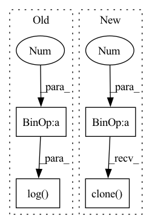

Pattern ID :5237
Before Change
def initialize_biases(self):
for conv in self.cls_preds:
b = conv.bias.view(self.na, -1)
b.data.fill_(-math.log( (1 - self.prior_prob) / self.prior_prob) )
conv.bias = torch.nn.Parameter(b.view(-1), requires_grad=True)
for conv in self.obj_preds:
b = conv.bias.view(self.na, -1)After Change
w.data.fill_(0.)
conv.weight = torch.nn.Parameter(w, requires_grad=True)
self.proj = nn.Parameter(torch.linspace(0, self.reg_max, self.reg_max + 1 ), requires_grad=False)
self.proj_conv.weight = nn.Parameter(self.proj.view([1, self.reg_max + 1, 1, 1]).clone() .detach(),
requires_grad=False)
def forward(self, x):In pattern: SUPERPATTERN
Frequency: 3
Non-data size: 4
Instances Fragment ID: 18580271
Project Name: augmentedstartups/as-one
Commit Name: 6f2f010dcaf35105030dcf5c371d3d2f97c25d90
Time: 2022-09-16
Author: ajmair.kashif@axcelerate.ai
File Name: asone/detectors/yolov6/yolov6/models/effidehead.py
M Class Name: Detect
N Class Name: Detect
M Method Name: initialize_biases(1)
N Method Name: initialize_biases(1)
M Parent Class: nn.Module
N Parent Class: nn.Module
M File Name: asone/detectors/yolov6/yolov6/models/effidehead.py
N File Name: asone/detectors/yolov6/yolov6/models/effidehead.py
M Start Line: 48
M End Line: 57
N Start Line: 55
N End Line: 73
Before Change
wavs, _ = batch.sig
Xs = stft(wavs.data.cpu().numpy(), n_fft=1024, hop_length=512)
Xs = np.log(1 + np.abs(Xs))
Xs = torch.Tensor(Xs).float().to(self.device)
// Concatenate labels (due to data augmentation)
if stage == sb.Stage.TRAIN and False:After Change
X_stft = self.modules.compute_stft(wavs)
X_stft_power = sb.processing.features.spectral_magnitude(X_stft, power=self.hparams.spec_mag_power)
X_stft_logpower = torch.log(X_stft_power + 1 ).transpose(1, 2)
// Concatenate labels (due to data augmentation)
if stage == sb.Stage.TRAIN and False:
classid = torch.cat([classid] * self.n_augment, dim=0)
loss_nmf = torch.linalg.norm(reconstructions - X_stft_logpower) ** 2
loss_nmf = loss_nmf / reconstructions.shape[0] // avg on batches
loss_nmf = self.hparams.alpha * loss_nmf
// loss_nmf += self.hparams.beta * torch.linalg.norm(time_activations)
if stage != sb.Stage.TEST:
if hasattr(self.hparams.lr_annealing, "on_batch_end"):
self.hparams.lr_annealing.on_batch_end(self.optimizer)
self.last_batch = batch
self.batch_to_plot = (reconstructions.clone(), X_stft_logpower.clone() )
theta_out = -torch.log(theta_out)
loss_fdi = (F.softmax(classification_out, dim=1) @ theta_out.T).sum() Fragment ID: 18580270
Project Name: speechbrain/speechbrain
Commit Name: 5141f8cfe46029b6dd2c051199291f4c21cae8e0
Time: 2022-11-20
Author: me@francescopaissan.it
File Name: recipes/ESC50/classification/train_interpreter.py
M Class Name: InterpreterESC50Brain
N Class Name: InterpreterESC50Brain
M Method Name: compute_objectives(4)
N Method Name: compute_objectives(4)
M Parent Class: sb.core.Brain
N Parent Class: sb.core.Brain
M File Name: recipes/ESC50/classification/train_interpreter.py
N File Name: recipes/ESC50/classification/train_interpreter.py
M Start Line: 147
M End Line: 173
N Start Line: 150
N End Line: 171
Before Change
def initialize_biases(self):
for conv in self.cls_preds:
b = conv.bias.view(self.na, -1)
b.data.fill_(-math.log( (1 - self.prior_prob) / self.prior_prob) )
conv.bias = torch.nn.Parameter(b.view(-1), requires_grad=True)
for conv in self.obj_preds:
b = conv.bias.view(self.na, -1)After Change
conv.weight = torch.nn.Parameter(w, requires_grad=True)
self.proj = nn.Parameter(torch.linspace(0, self.reg_max, self.reg_max + 1), requires_grad=False)
self.proj_conv.weight = nn.Parameter(self.proj.view([1, self.reg_max + 1, 1, 1]).clone() .detach(),
requires_grad=False)
def forward(self, x): Fragment ID: 18580273
Project Name: meituan/yolov6
Commit Name: 49a80b1fdd025c9a326d0e4fea9825581dec00f4
Time: 2022-08-31
Author: lichuyi@meituan.com
File Name: yolov6/models/effidehead.py
M Class Name: Detect
N Class Name: Detect
M Method Name: initialize_biases(1)
N Method Name: initialize_biases(1)
M Parent Class: nn.Module
N Parent Class: nn.Module
M File Name: yolov6/models/effidehead.py
N File Name: yolov6/models/effidehead.py
M Start Line: 48
M End Line: 57
N Start Line: 55
N End Line: 73